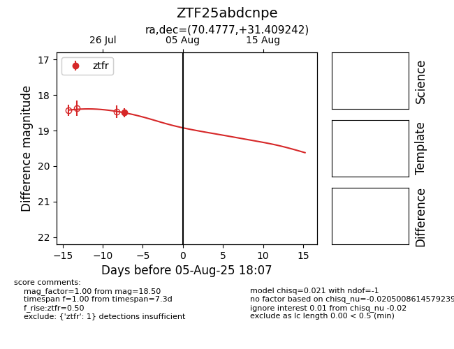

Target ZTF25abdcnpe at 2025-08-05 23:02, see:
FINK: fink-portal.org/ZTF25abdcnpe
Lasair: lasair-ztf.lsst.ac.uk/objects/ZTF25abdcnpe
ALeRCE: alerce.online/object/ZTF25abdcnpe
alt names
ZTF25abdcnpe (ztf,fink)
coordinates:
equatorial (ra, dec) = (70.4777,+31.40924)
galactic (l, b) = (169.9266,-9.73912)
photometry
last ztfr=18.50
1 ztfr detections
